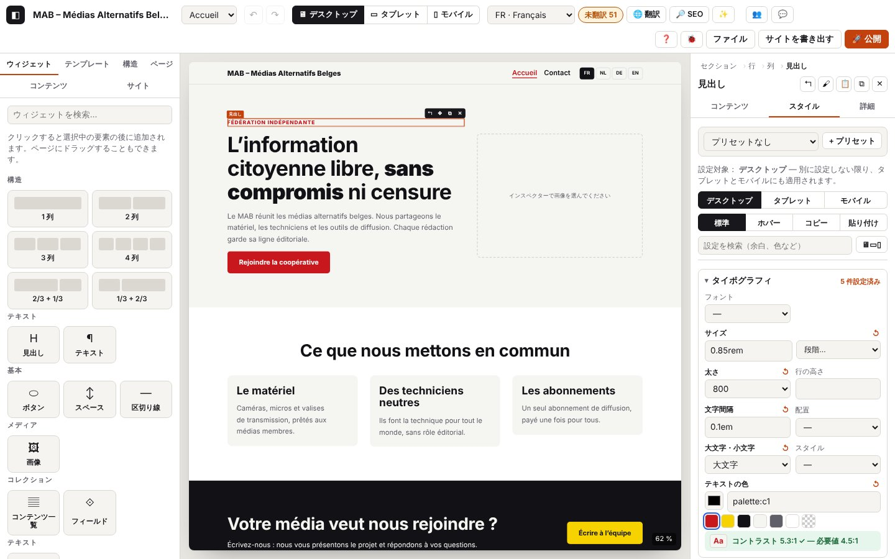

3. 書式とデザイン

このページの内容
- 3.1 インスペクターで要素を調整する
- 3.2 フィールドに画像を読み込む
- 3.3 デバイスごとにスタイルを調整する
- 3.4 ホバー時のスタイル
- 3.5 コントラストを確認する
- 3.6 スタイルをコピーして貼り付ける
- 3.7 スタイルのプリセット
- 3.8 サイトの色とフォント
- 3.9 セクションのテンプレート
- 3.10 カスタム CSS と詳細設定
- 3.11 再利用できるコンポーネント
- 3.12 ブロックで作るヘッダーとフッター
- 3.13 インスペクターの上部：パスとボタン
- 3.14 セクション、行、列の設定
- 3.15 効果：スクロールで表示、ホバーで動く
- 3.16 コンポーネントをウィンドウ（ポップアップ）で開く
- この章のコード
以下のログ抜粋はフランス語で記録したものです。コードとレベルはどの言語でも同じです（実際のログのメッセージは表示言語で出ます）。
右側のインスペクターでは、選択した要素のコンテンツ（テキスト、リンク、画像、リスト）、スタイル（デバイスごと、ホバー時）、詳細設定を調整します。サイトパネルではサイト全体に効くもの（色、フォント、段階、プリセット、ヘッダーとフッター）を、テンプレートパネルでは既製のセクションと、再利用できる自分のコンポーネントを扱います。
ログのドメイン
inspector.*：タブ、変更したフィールド（名前、種類、言語、長さ。テキストそのものは記録しません）、拒否された値、列のレイアウト、連結、リスト、画像の読み込み。style.*：スタイルの設定（プロパティ、デバイス、状態）、リセット、拒否された値、プリセット、コントラスト、スタイルのコピー／貼り付け。template.*：挿入したセクションのテンプレート、テンプレートパネルで選んだコンポーネント。action.component-*：コンポーネント（作成、挿入、編集、切り離し、名前の変更、削除）。拒否：action.refused。settings.*：サイトパネルの設定（色、フォント、段階、プリセット、ヘッダーとフッター）。サイトパネルが書き込むもので、ここではデザインに関わる部分を扱います。- ほかに役立つもの：
store.commit（すべての変更）、store.view（デバイス）、store.edit-target（コンポーネントやヘッダーなどの編集）、canvas.load.*とcanvas.scale（第2章）、ui.toast（メッセージ）。
3.1 インスペクターで要素を調整する
目的：ページに直接触れずに、要素の内容と設定を変えること。
手順
- 要素を選択します。タブは コンテンツ、スタイル、詳細 です。
- コンテンツ：言語ごとのテキスト、ドロップダウンリスト、チェックボックス、リンク、画像、リストの項目（+ 要素、↑ ↓ ✕）。
- 詳細：アンカー（
#contact。アクセント記号やスペースは自動で置き換わります）、CSS クラス、アクセシブルなラベル、デバイスや言語ごとの非表示、カスタム CSS。
表示される内容：変更はすぐにページに反映されます。
期待されるログ（journaux/style-inspecteur.log）
技術的な詳細：想定されるログ
05:10:50.420 +18.85s DEBUG inspector.tab Onglet de l’inspecteur : Contenu {"tab":"content","from":"content","type":"heading"}
05:10:50.440 +18.87s DEBUG inspector.field Champ modifié : Niveau {"key":"level","type":"select","how":"liste","option":"h3"}
…
05:10:50.634 +19.07s DEBUG inspector.field Champ modifié : Texte {"key":"text","type":"inline","lang":"fr","how":"saisie","chars":16}
05:10:50.805 +19.24s DEBUG inspector.tab Onglet de l’inspecteur : Avancé {"tab":"advanced","from":"content","type":"heading"}
…
05:10:50.844 +19.27s DEBUG inspector.advanced Réglage avancé : anchor {"id":"n_1r5g674a09","props":["anchor"]}
…
05:10:51.037 +19.47s DEBUG inspector.advanced CSS personnalisée enregistrée {"id":"n_1r5g674a09","props":["css"],"chars":22}
05:10:51.214 +19.64s WARN inspector.css-refused CSS personnalisée refusée : utilisez seulement des déclarations « propriété: valeur; » (pas d’accolades, de @, d’url() ni de commentaires). {"id":"n_1r5g674a09","chars":27,"start":"color:red}body{display:none","error":{"name":"Error","message":"CSS personnalisée refusée : utilisez seulement des déclarations « propriété: valeur; » (pas d’accolades, de @, d’url() ni de commentaires).","stack":"Error: CSS personnalisée refusée : utilisez seulement des déclarations « propriété: valeur; » (pas d’accolades, de @, d’url() ni de commentaires).\nat sanitizeCustomCss (http://localhost:8791/core/tree.js:251:104)\nat http://localhost:8791/core/tree.js:282:42\nat update (http://localhost:8791/core/tree.js:160:3)\nat setAdvanced (http://localho…
05:10:51.214 +19.64s ERROR ui.toast Message affiché : CSS personnalisée refusée : utilisez seulement des déclarations « propriété: valeur; » (pas d’accolades, de @, d’url() ni de commentaires). {"type":"error"}
05:10:51.385 +19.82s DEBUG inspector.tab Onglet de l’inspecteur : Contenu {"tab":"content","from":"advanced","type":"heading"}確認すること：inspector.tab（タブ、切り替える前のタブ）。key（フィールド名）、type（select、inline、richtext、url、toggle、number、icon…）、how（リスト、入力、チェックボックス、リッチテキスト）、lang、そして chars（長さ）または option／value 付きの inspector.field。inspector.advanced（詳細設定）。インスペクターで入力したテキストは 1 文字ごとに保存されます（store.commit「同じ取り消し段階」）が、ログには、フィールドを離れたときに1 回だけ記録されます。インスペクターが再描画されるたびに：inspector.render（TRACE）。
ほかのパターン
| 状況 | 画面で変わること | ログ |
|---|---|---|
| 行の列のレイアウト | 列の幅が変わります | inspector.layout（INFO）{"spans":[4,4,4],"before":"7-5"}（journaux/style-inspecteur-disposition.log） |
| 「ページまたはセクションにリンク…」でリンクを選んだ | inspector.link-pick（DEBUG）{"kind":"page"}（またはアンカー、ポップアップウィンドウ） | |
| リンクを手で入力した | inspector.field {"type":"url","kind":…}：https、http（安全でない）、メール、電話、アンカー…（アドレスそのものは記録されません） | |
| チェックボックスをオン（新しいタブ…） | inspector.field {"type":"toggle","value":true} | |
| リストの項目を追加、上へ、下へ、削除 | inspector.list（DEBUG）{"action":"ajouté","count":4} | |
| 数値のフィールドを空にした | 前の値が残ります | inspector.field-empty（DEBUG） |
| コレクションに連結したフィールド（カード、詳細ページ） | 「連結先のフィールド：…」 | inspector.bind（INFO）{"field":…,"to":…}。連結の解除："to":null |
| ✨ 画像を説明（AI による代替テキスト） | テキストが提案され、「要確認」になります | inspector.alt-ai（DEBUG）、ai.* の行（第7章）、続いて inspector.alt-ai-ok（INFO）。提案がない場合：inspector.alt-ai-none（DEBUG） |
| あなたがフィールドに入力している間に、ほかの参加者がその要素を変更した | フィールドを離れたときにインスペクターが再描画されます | inspector.remote-deferred（DEBUG） |
期待されるログ — リンク、チェックボックス、リスト、画像のアドレス（journaux/style-inspecteur-variantes.log）
技術的な詳細：想定されるログ
05:10:52.182 +20.61s DEBUG inspector.link-pick Lien choisi dans la liste : page {"kind":"page","value":"page:p_f0ooet9j"}
…
05:10:52.333 +20.76s DEBUG inspector.field Lien modifié : Lien {"key":"link","type":"url","how":"saisie","kind":"http (non sécurisé)"}
05:10:52.387 +20.82s DEBUG inspector.field Champ modifié : Ouvrir dans un nouvel onglet {"key":"newTab","type":"toggle","how":"case","value":true}
…
05:10:52.606 +21.04s DEBUG library.insert Bibliothèque : clic sur « Liste à icônes » {"type":"icon-list","how":"clic"}
…
05:10:52.622 +21.05s INFO action.add Widget ajouté : Liste à icônes {"type":"icon-list","id":"n_6236730x5f","parentType":"column"}
…
05:10:52.962 +21.39s DEBUG inspector.list Élément : ajouté {"key":"items","id":"n_6236730x5f","action":"ajouté","count":4}
…
05:10:53.224 +21.66s WARN inspector.image-url Adresse d’image sans https:// : elle risque d’être refusée ou bloquée {"field":"src","https":false,"chars":26}
…
05:10:53.406 +21.84s INFO store.undo Annuler {"left":24,"redo":1}
…エラーと拒否
| 状況 | 表示されるメッセージ | ログ | 対処 |
|---|---|---|---|
| コアが値を拒否した（フィールド、リスト、レイアウト、連結、代替テキスト） | 赤いメッセージ | what（field、list、layout、bind、advanced、alt）、フィールド、error 付きの inspector.refused（WARN） | メッセージを読み、値を直してください |
危険なカスタム CSS（}、@、url()、コメント） | 「カスタム CSS を拒否しました：「プロパティ: 値;」の宣言だけを使ってください…」。フィールドが赤くなります | 長さとテキストの冒頭付きの inspector.css-refused（WARN） | propriété: valeur;（プロパティ: 値;）の形だけを書いてください |
3.2 フィールドに画像を読み込む
目的：画像ウィジェット、カード、セクションの背景、ロゴに写真を入れること。
手順
- コンテンツタブ（またはスタイル → 背景）：「画像を読み込む」でファイルを選びます。またはオンライン画像のアドレス（
https://…）を貼り付けます。 - 「外す」でフィールドから画像を外します。
表示される内容：プレビューと、「画像を WebP で追加しました：800×450 px、2 KB。」というメッセージ。
期待されるログ（journaux/style-image.log）
技術的な詳細：想定されるログ
05:11:11.410 +39.84s INFO inspector.image.start [inspector.image#1] Import d’une image {"field":"src","type":"image/png","kb":2}
05:11:11.411 +39.84s INFO image.import.start [image.import#1] Import de l’image « c16-photo.png » {"name":"c16-photo.png","type":"image/png","kb":2}
05:11:11.421 +39.85s DEBUG image.import.decode [image.import#1 · 10 ms] Image lue : 800×450 px {"width":800,"height":450,"ms":10}
05:11:11.454 +39.88s DEBUG image.import.encode [image.import#1 · 43 ms] Version principale : 800×450 px, 2 Ko (image/webp) {"w":800,"h":450,"mime":"image/webp","kb":2,"ms":32}
05:11:11.471 +39.90s DEBUG image.import.variant [image.import#1 · 60 ms] Variante 480 px : 1 Ko {"w":480,"kb":1,"ms":15}
05:11:11.473 +39.90s INFO image.import.ok [image.import#1 · 62 ms] Image prête : 800×450 px, 2 Ko (−20 %), 1 variante(s) {"name":"c16-photo.webp","mime":"image/webp","width":800,"height":450,"kbIn":2,"kbOut":2,"gain":20,"variants":[480]}
05:11:11.474 +39.91s DEBUG inspector.image.webp [inspector.image#1 · 64 ms] Image convertie en WebP {"width":800,"height":450,"kb":2,"variants":1}
…
05:11:11.493 +39.92s INFO inspector.image.ok [inspector.image#1 · 83 ms] Image ajoutée : 800×450 px {"asset":"img_vm176qrs","field":"src"}
05:11:11.494 +39.92s INFO ui.toast Message affiché : Image ajoutée en WebP : 800×450 px, 2 Ko.
…確認すること：inspector.image の流れ（フィールド、種類、サイズ）の中に image.import の流れ（読み取り、WebP への変換、サイズ違いの版：第4章）があり、続いて画像の ID（asset）付きの inspector.image.webp と inspector.image.ok が出ます。
ほかのパターン
| 状況 | ログ |
|---|---|
| ファイル選択のウィンドウをファイルなしで閉じた | inspector.image-none（DEBUG） |
オンラインのアドレス https://… | inspector.image-url（DEBUG）{"https":true} |
| アドレスを消した、または「外す」 | inspector.image-url「画像のアドレスを消去しました」／inspector.image-remove（DEBUG）。ファイルはプロジェクトに残ります |
エラー
| 状況 | 表示されるメッセージ | ログ | 対処 |
|---|---|---|---|
| ファイルが壊れている、または対応していない形式 | 「画像を読み取れません。ファイルが破損しているか不完全、またはこのブラウザーが解読できない形式です。」 | image.import.fail（ERROR）、続いて inspector.image.fail（ERROR） | 画像を JPEG か PNG で保存し直して、もう一度試してください |
https:// でないアドレス（http://、ftp://…） | 画像が表示されないおそれがあります | inspector.image-url（WARN）{"https":false} | https:// のアドレスを使うか、ファイルを読み込んでください |
3.3 デバイスごとにスタイルを調整する
目的：サイズ、余白、色などを、デスクトップ、タブレット、モバイルに合わせること。
手順
- 要素を選択し、スタイル タブを開きます。
- デバイスを選びます（タブ内のデスクトップ／タブレット／モバイルのボタン、または上部の 🖥 ▭ ▯）。デスクトップの設定は、別に設定しない限りほかのデバイスにも適用されます。タブレットの設定はモバイルにも適用されます。
- 値を入力して Enter を押します（
24px、1.5rem、50%、auto、clamp(1rem, 3vw, 2rem)。数字だけなら px になります）。またはサイトの段階から選びます（size:xl、space:m）。↺ で継承値に戻ります。 - 🖥▭▯ で 3 つのデバイスを並べて表示します。「設定を検索」で一覧を絞り込めます。
表示される内容：値がページに反映されます。フィールドには継承値が灰色で表示されます。
期待されるログ（journaux/style-appareils.log）
技術的な詳細：想定されるログ
05:10:54.654 +23.09s DEBUG style.set Taille = 72px (Ordinateur) {"key":"fontSize","state":"normal","device":"desktop","target":"node","id":"n_2l6m0w3e5i","value":"72px","autoPx":true}
05:10:54.885 +23.32s DEBUG store.view Vue : device=mobile {"device":"mobile"}
05:10:54.887 +23.32s DEBUG canvas.scale Canevas mobile : 390 px {"device":"mobile","width":390,"scale":100,"available":792}
…
05:10:55.352 +23.78s DEBUG style.set Taille = 30px (Mobile) {"key":"fontSize","state":"normal","device":"mobile","target":"node","id":"n_2l6m0w3e5i","value":"30px"}
…
05:10:55.607 +24.04s DEBUG style.reset « Taille » réinitialisé : valeur héritée (Mobile) {"key":"fontSize","state":"normal","device":"mobile","target":"node","id":"n_2l6m0w3e5i"}
05:10:55.856 +24.29s WARN style.refused Valeur refusée pour « Taille » : 12pt (unité ou expression non autorisée) {"key":"fontSize","state":"normal","device":"mobile","target":"node","id":"n_2l6m0w3e5i","value":"12pt","kind":"length"}
05:10:55.857 +24.29s ERROR ui.toast Message affiché : Valeur refusée pour « Taille » : 12pt. Exemples : 24px, 1.5rem, 50%, auto, clamp(1rem, 3vw, 2rem). {"type":"error"}
…
05:10:56.109 +24.54s DEBUG style.reset « Taille » réinitialisé : valeur héritée (Mobile) {"key":"fontSize","state":"normal","device":"mobile","target":"node","id":"n_2l6m0w3e5i"}
05:10:56.170 +24.60s DEBUG store.view Vue : device=desktop {"device":"desktop"}
05:10:56.172 +24.60s DEBUG canvas.scale Canevas ordinateur : 1280 px, réduit à 62 % {"device":"desktop","width":1280,"scale":62,"available":792}
…確認すること：key（プロパティ）、device（desktop、tablet、mobile。ホバー時は tous）、state（normal または survol）、target（node、preset、multi）、value 付きの style.set。数字だけの値に px が付いたときは "autoPx":true、段階の値は "token":true、パレットの色は "palette":true。デバイスの切り替え：store.view、続いて canvas.scale。↺：style.reset。
ほかのパターン
| 状況 | 画面で変わること | ログ |
|---|---|---|
| スタイルタブでデバイスを選んだ | style.device（DEBUG）{"device":"tablet","from":"desktop"}、続いて store.view（journaux/style-trois-appareils.log） | |
| 3 つのデバイスの表示 | 設定ごとに 3 つのフィールド | style.all-devices（DEBUG）{"on":true}。style.set にはその列の device が入ります |
| 複数の要素を選択している | 設定はすべての要素に適用されます | style.set {"target":"multi","count":3} |
| 内側または外側の余白の「すべてリセット」 | style.reset {"keys":[…]} | |
| 設定の検索 | style.search（TRACE） | |
| Ctrl+K で設定を呼び出した | そのフィールドが強調されます | style.focus（DEBUG）。その種類の要素にない設定の場合：style.focus-missing（DEBUG） |
期待されるログ — タブレット、3 つのデバイス（journaux/style-trois-appareils.log）
技術的な詳細：想定されるログ
05:10:56.635 +25.07s DEBUG style.device Onglet Style : réglages pour Tablette {"device":"tablet","from":"desktop"}
05:10:56.635 +25.07s DEBUG store.view Vue : device=tablet {"device":"tablet"}
05:10:56.638 +25.07s DEBUG canvas.scale Canevas tablette : 820 px, réduit à 97 % {"device":"tablet","width":820,"scale":97,"available":792}
…
05:10:57.003 +25.43s DEBUG style.all-devices Vue « trois appareils côte à côte » {"on":true}
…
05:10:57.212 +25.64s DEBUG style.set Taille = 28px (Mobile) {"key":"fontSize","state":"normal","device":"mobile","target":"node","id":"n_2l6m0w3e5i","value":"28px"}
05:10:57.384 +25.82s DEBUG style.all-devices Vue d’un seul appareil {"on":false}
05:10:57.434 +25.86s DEBUG style.device Onglet Style : réglages pour Ordinateur {"device":"desktop","from":"tablet"}
05:10:57.435 +25.87s DEBUG store.view Vue : device=desktop {"device":"desktop"}
05:10:57.436 +25.87s DEBUG canvas.scale Canevas ordinateur : 1280 px, réduit à 62 % {"device":"desktop","width":1280,"scale":62,"available":792}
…エラー
| 状況 | 表示されるメッセージ | ログ | 対処 |
|---|---|---|---|
使えない単位や式（12pt、calc(1px) }body{…） | 「「サイズ」の値は使えません：12pt。例：24px、1.5rem、50%、auto、clamp(…)。」。フィールドが赤くなります | key、value、device 付きの style.refused（WARN） | px、rem、em、%、vw、vh、ch、または clamp()、min()、max()、calc() の式を使ってください |
| コアが設定を拒否した | 赤いメッセージ | error 付きの style.set-fail（WARN） | ログを送ってください |
| レビューモード | 「レビューモード…」 | store.readonly（WARN）。style.set は出ません | — |
3.4 ホバー時のスタイル
目的：ボタンやカードなどに、マウスが乗ったときの見た目を設定すること。
手順：スタイルタブ → ホバー。ホバー時に意味のあるプロパティ（色、枠線、影、変形…）だけが表示されます。戻るには 標準。
表示される内容：「設定対象：ホバー（すべてのデバイス）」。ページでは、マウスが乗るとスタイルが適用されます。
期待されるログ（journaux/style-survol.log）
技術的な詳細：想定されるログ
05:10:57.884 +26.32s DEBUG style.state Onglet Style : état survol (réglages communs à tous les appareils) {"state":"hover"}
…
05:10:58.080 +26.51s DEBUG style.set Couleur de fond = palette:c3 (survol) {"key":"background","state":"survol","device":"tous","target":"node","id":"n_5x206n134e","value":"palette:c3","palette":true}
05:10:58.319 +26.75s DEBUG style.state Onglet Style : état normal {"state":"normal"}確認すること：style.state {"state":"hover"}、続いて "state":"survol","device":"tous" 付きの style.set。
ほかのパターンとエラー：3.3 と同じです。
3.5 コントラストを確認する
目的：テキストを読みやすく保つこと（WCAG AA：4.5:1、大きな文字なら 3:1）。
手順：テキストまたは背景の色を設定します（スタイルタブ）。色の下のバッジに実際のコントラストが表示されます。
表示される内容：緑のバッジ「コントラスト 17.1:1 ✓」、または赤のバッジ「コントラスト 1.8:1 ✗ — 必要値 4.5:1」。背景が画像の場合は「コントラストを目で確認してください」。
期待されるログ（journaux/style-contraste.log）
技術的な詳細：想定されるログ
05:10:58.636 +27.07s WARN style.contrast-low Contraste insuffisant : 1,8:1 pour 4.5:1 requis {"id":"n_4y660b0u1y","type":"text","ratio":1.76,"required":4.5,"fg":"#bbbbbb","bg":"#f5f5f2"}
05:10:58.646 +27.08s DEBUG style.set Couleur du texte = #bbbbbb (Ordinateur) {"key":"color","state":"normal","device":"desktop","target":"node","id":"n_4y660b0u1y","value":"#bbbbbb"}
…
05:10:59.013 +27.44s DEBUG style.contrast-ok Contraste suffisant : 17,1:1 {"id":"n_4y660b0u1y","ratio":17.11,"required":4.5}
05:10:59.024 +27.45s DEBUG style.set Couleur du texte = palette:c3 (Ordinateur) {"key":"color","state":"normal","device":"desktop","target":"node","id":"n_4y660b0u1y","value":"palette:c3","palette":true}確認すること：コントラストが不足した時点で、ratio、required、fg（文字）、bg（背景）付きの style.contrast-low（WARN）。十分に戻ったときは style.contrast-ok（DEBUG）。コントラストは変化したときに記録されます（再描画のたびではありません）。正しいコントラストの最初の表示は TRACE です。
ほかのパターン
| 状況 | ログ |
|---|---|
| 背景が画像 | style.contrast-unknown（DEBUG） |
| パレットの色が明るすぎる（サイトパネル） | lowContrast 付きの settings.color（3.8） |
エラー
| 状況 | 表示されるメッセージ | ログ | 対処 |
|---|---|---|---|
| コントラストを計算できない（読み取れない色） | バッジが出ません | error 付きの style.contrast-error（WARN） | ログを送ってください |
3.6 スタイルをコピーして貼り付ける
目的：ある要素に、別の要素とまったく同じスタイルを付けること。
手順：スタイルタブ →「コピー」（またはインスペクター上部の 🖌、または右クリック →「スタイルをコピー」）。1 つまたは複数の要素を選択 →「貼り付け」（📋）。
表示される内容：「スタイルをコピーしました。」「スタイルを貼り付けました。」（または「3 個の要素にスタイルを貼り付けました。」）。列の幅はコピーされません。
期待されるログ（journaux/style-copier-coller.log）
技術的な詳細：想定されるログ
05:10:59.453 +27.88s INFO style.copy Style copié : Titre {"id":"n_2l6m0w3e5i","type":"heading","props":{"desktop":1,"tablet":0,"mobile":1,"hover":0}}
05:10:59.453 +27.88s INFO ui.toast Message affiché : Style copié.
05:10:59.509 +27.94s DEBUG store.select Sélection : heading {"id":"n_227141693i","type":"heading"}
…
05:10:59.649 +28.08s INFO style.paste Style collé {"count":1,"from":"heading","types":["heading"]}
05:10:59.649 +28.08s INFO ui.toast Message affiché : Style collé.確認すること：デバイスごとの設定数（props）付きの style.copy（INFO）。count、コピー元の種類（from）、貼り付けた種類（types）付きの style.paste（INFO）。
ほかのパターン
| 状況 | ログ |
|---|---|
| コピーせずに貼り付けた | style.paste-empty（DEBUG） |
| 何も選択されていない | action.none（DEBUG）{"action":"coller le style"} |
エラー：コアのルールが拒否すると action.refused {"action":"coller le style"} が出ます。
3.7 スタイルのプリセット
目的：ある種類の要素（「メインボタン」）の見た目を一度だけ決めて、どこにでも適用すること。一度の変更ですべてを変えること。
手順
- 調整済みの要素のスタイルタブ →「+ プリセット」で名前を付け、「作成」：その要素は以後このプリセットに従います。
- 同じ種類の別の要素では：一覧からプリセットを選びます。
- 「プリセットを編集」：設定はプリセット（とそれを使うすべての要素）に適用されます。終わったら「完了」。
- 「切り離す」：要素は見た目を保ったまま、プリセットに従わなくなります。「「…」の標準にする」：その種類の新しい要素にはすべてこのプリセットが付きます。
- サイトパネル → プリセット：名前の変更、複製、削除（要素は見た目を保ちます）。
表示される内容：「✎ 編集中のプリセット：…：2 個の要素にこの設定が適用されます。」という帯。
期待されるログ（journaux/style-presets.log）
技術的な詳細：想定されるログ
05:11:00.085 +28.52s DEBUG style.preset-form Formulaire « nouveau preset » ouvert {"open":true,"type":"button"}
…
05:11:00.167 +28.60s INFO style.preset-create Preset « Bouton sombre » créé à partir de l’élément {"preset":"ps_f6by5zxy","type":"button","id":"n_5x206n134e","props":1}
05:11:00.167 +28.60s INFO ui.toast Message affiché : Preset « Bouton sombre » créé. Appliquez-le à d’autres « Bouton » depuis cette liste.
…
05:11:00.623 +29.05s INFO style.preset-apply Preset « Bouton sombre » appliqué {"id":"n_2s1e5v6x46","type":"button","preset":"ps_f6by5zxy"}
05:11:00.903 +29.33s INFO style.preset-edit Modification du preset « Bouton sombre » : les réglages s’appliquent à 2 élément(s) {"preset":"ps_f6by5zxy","on":true,"uses":2}
…
05:11:01.138 +29.57s DEBUG style.set Couleur de fond = palette:c2 (Ordinateur, preset « Bouton sombre ») {"key":"background","state":"normal","device":"desktop","target":"preset","preset":"ps_f6by5zxy","value":"palette:c2","palette":true}
05:11:01.367 +29.80s INFO style.preset-edit Fin de la modification du preset « Bouton sombre » {"preset":"ps_f6by5zxy","on":false,"uses":2}
…
05:11:01.432 +29.86s INFO style.preset-default Preset « Bouton sombre » par défaut pour les nouveaux « Bouton » {"type":"button","preset":"ps_f6by5zxy"}
…
05:11:01.632 +30.06s INFO style.preset-detach Élément détaché du preset « Bouton sombre » : apparence gardée {"id":"n_2s1e5v6x46","preset":"ps_f6by5zxy"}
05:11:01.868 +30.30s DEBUG style.preset-form Formulaire « nouveau preset » ouvert {"open":true,"type":"button"}
05:11:01.936 +30.37s WARN style.preset-refused Preset non créé : Donnez un nom au preset. {"what":"create","id":"n_2s1e5v6x46","type":"button","chars":0,"error":{"name":"Error","message":"Donnez un nom au preset.","stack":"Error: Donnez un nom au preset.\nat cleanName (http://localhost:8791/core/presets.js:17:17)\nat createPreset (http://localhost:8791/core/presets.js:54:31)\nat presetFromNode (http://localhost:8791/core/presets.js:67:13)\nat HTMLButtonElement.create (http://localhost:8791/editor/styletab.js:288:17)"}}
05:11:01.937 +30.37s ERROR ui.toast Message affiché : Donnez un nom au preset. {"type":"error"}確認すること：style.preset-form（フォームを開いた）、style.preset-create（プリセットの ID、種類、引き継いだ設定の数）、style.preset-apply、style.preset-edit（on、uses）、"target":"preset" 付きの style.set、style.preset-default、style.preset-detach。
ほかのパターン
| 状況 | ログ |
|---|---|
| 「プリセットなし」／標準のプリセットに戻す | style.preset-apply {"preset":"-"}／{"preset":null} |
| 新しいプリセットの名前の欄で Esc | style.preset-form {"open":false} |
| サイトパネル：名前の変更、複製、削除 | settings.preset-rename、settings.preset-duplicate、settings.preset-delete（INFO）。削除をキャンセルした場合：settings.preset-delete-cancel（DEBUG） |
エラー
| 状況 | 表示されるメッセージ | ログ | 対処 |
|---|---|---|---|
| 名前が空 | 「プリセットに名前を付けてください。」 | style.preset-refused（WARN）{"what":"create"} | 名前を付けてください |
| プリセットが見つからない（ほかの参加者が削除した） | 赤いメッセージ | style.preset-refused {"what":"apply"}（または default、detach） | 一覧を開き直してください |
| サイトパネルでの拒否 | 赤いメッセージ | settings.refused（WARN） | メッセージを読んでください |
3.8 サイトの色とフォント
目的：パレット、フォント、角の丸み、文字と余白の段階を変えて、サイトの印象を一度に変えること。
手順
- サイト パネル：パレットの色をクリックして別の色を選びます。名前を変えることもできます。「+ 色」で色を追加します。
- 見出しと本文のフォント、角の丸み、段階（「文字サイズの段階」「余白」）。
- 「パレット外の色」：要素に直接指定された色を、ワンクリックでパレットの色に置き換えます。
表示される内容：サイト全体がすぐに変わります。フォントを変えると、フォントを読み込むためにキャンバスが再読み込みされます。
期待されるログ（journaux/style-couleurs-polices.log）
技術的な詳細：想定されるログ
05:11:02.307 +30.74s DEBUG store.commit Modification {"key":"palette-c1","source":"panel","past":39,"page":"p_7mv9bc93"}
05:11:02.322 +30.75s INFO settings.color Couleur « Principale » : #0055aa {"key":"c1","value":"#0055aa"}
05:11:02.633 +31.06s DEBUG store.commit Modification {"key":null,"source":"panel","past":40,"page":"p_7mv9bc93"}
05:11:02.633 +31.06s INFO canvas.load.start [canvas.load#6] Chargement complet du canevas : polices du site {"reason":"polices du site","page":"p_7mv9bc93","lang":"fr","device":"desktop"}
05:11:02.634 +31.07s DEBUG canvas.load.render [canvas.load#6 · 1 ms] Page rendue {"ms":1,"kb":28}
05:11:02.645 +31.08s INFO settings.font Police des titres : Georgia (classique) {"role":"heading","font":"georgia","google":true}
05:11:02.671 +31.10s INFO canvas.load.ok [canvas.load#6 · 38 ms] Canevas prêt {"nodes":35,"scale":62}確認すること：色付きの settings.color（INFO）。settings.font（INFO）。フォントの変更で canvas.load.start {"reason":"polices du site"} → canvas.load.ok が出ます。カラーピッカーを動かしている間 settings.color は TRACE で、離したときに INFO の行が出ます。
ほかのパターン
| 状況 | ログ |
|---|---|
| 色の名前の変更、追加、削除 | settings.color-name、settings.color-add、settings.color-remove（INFO） |
| パレット外の色をすべて置き換えた | 設定の数付きの settings.color-replace（INFO） |
| 文字と余白の段階 | settings.type-scale、settings.space-scale（INFO） |
| 角の丸み、ページ間のトランジション | settings.theme（INFO） |
| Ctrl+Z | store.undo：色が元に戻ります |
エラー
| 状況 | 表示されるメッセージ | ログ | 対処 |
|---|---|---|---|
| メインの色が明るすぎて、ボタンが読みにくい | 「ボタン」の組み合わせが赤くなります | lowContrast 付きの settings.color。書き出し時に「コントラスト不足」の警告（第8章） | 色を濃くしてください |
| 設定を拒否された | 赤いメッセージ | settings.refused（WARN） | メッセージを読んでください |
3.9 セクションのテンプレート
目的：サイトのパレットに合った既製のセクション（ヒーロー、テキスト＋画像、お問い合わせ、行動喚起…）を追加すること。
手順：テンプレート パネル → テンプレートをクリックする（選択中のセクションの後に追加されます）か、置きたい場所へドラッグします。Ctrl+K の「テンプレート：…」でも追加できます。
表示される内容：セクションが選択された状態で現れ、キャンバスがそこまでスクロールします。
期待されるログ（クリック、続いてドラッグ：journaux/style-modele-section.log）
技術的な詳細：想定されるログ
05:11:03.369 +31.80s INFO action.add-section Section ajoutée depuis un modèle (1 rangée(s)) {"id":"n_5d4g5w6d5e","template":true,"index":1}
05:11:03.369 +31.80s INFO template.insert Modèle de section inséré : Héros {"template":"hero","id":"n_5d4g5w6d5e","rows":1}
05:11:03.396 +31.83s DEBUG canvas.scroll Défilement vers l’élément sélectionné {"id":"n_5d4g5w6d5e","from":0,"to":554}
…
05:11:04.013 +32.44s INFO dnd.start [dnd#7] Glisser : Contact {"kind":"template","type":"section","id":"contact","from":"modèles"}
…
05:11:04.455 +32.89s INFO dnd.ok [dnd#7 · 442 ms] Ajouté dans Page, position 5 {"id":"n_3x495g006d","type":"section","kind":"new","parentId":"n_464i603j4s","parentType":"page","index":4,"where":"canevas"}確認すること：クリックでは action.add-section {"template":true}、続いて template.insert（テンプレートの ID、行の数）。ドラッグでは dnd.start {"kind":"template","id":…}、続いて dnd.ok {"parentType":"page"}。
ほかのパターン
| 状況 | ログ |
|---|---|
| Ctrl+K から | cmdk.run {"id":"tpl:hero"}、続いて action.add-section |
エラー
| 状況 | 表示されるメッセージ | ログ | 対処 |
|---|---|---|---|
| テンプレートを組み立てられない（バグ） | エラー | error 付きの template.fail（ERROR） | ログを送ってください |
| 置き場所を拒否された | 赤いメッセージ | action.refused {"action":"ajouter une section"} | セクションを選択してください |
3.10 カスタム CSS と詳細設定
目的：上級者向けに、要素に CSS の宣言を追加すること。領域に名前を付けること。要素を非表示にすること。
手順：詳細 タブで、「カスタム CSS」に propriété: valeur;（プロパティ: 値;）の形で書き、フィールドを離れます。
表示される内容：ルールが適用されます。拒否された CSS ではフィールドが赤くなります。
期待されるログ：3.1 を参照（journaux/style-inspecteur.log）：inspector.advanced「カスタム CSS を保存しました」{"props":["css"],"chars":22}、続いて拒否の inspector.css-refused（WARN）。
ほかのパターン
| 状況 | ログ |
|---|---|
| デスクトップ、タブレット、モバイルで非表示。言語ごとに非表示 | inspector.advanced {"props":["hideOn"]}／["hideLangs"] |
| アクセシブルなラベル（言語ごと） | inspector.advanced {"props":["ariaLabel"],"lang":"fr"} |
エラー：inspector.css-refused（3.1）。
3.11 再利用できるコンポーネント
目的：ブロック（セクション、行、列、ウィジェット）を一度定義し、複数のページで使い、一度の変更ですべてを変えること。
手順
- ブロックを右クリック →「コンポーネントを作成…」（または詳細タブ →「このブロックからコンポーネントを作成」）で、名前を付けます。
- テンプレート パネル →「マイコンポーネント」：クリック（またはドラッグ）して、別のページに挿入します。
- インスタンスをダブルクリック（または「コンポーネントを編集」）：「コンポーネント「…」を編集中です」という帯が出ます。編集して「完了」。
- 「切り離す」：インスタンスは独立したコピーになります。パネルでは、名前の変更、✕ で削除（インスタンスはコピーになります）。
表示される内容：インスタンスには紫の点線の輪郭があります。コンポーネントの変更はすべての場所に反映されます。
期待されるログ — 作成と挿入（journaux/style-composant-creer.log）
技術的な詳細：想定されるログ
05:11:04.956 +33.39s DEBUG ctxmenu.open Menu contextuel : Section (structure) {"id":"n_43295m1m6y","type":"section","from":"structure","items":10,"disabled":["parent"]}
…
05:11:05.152 +33.58s DEBUG ctxmenu.action Menu contextuel : Créer un composant… {"action":"component","id":"n_43295m1m6y","type":"section"}
…
05:11:05.172 +33.60s INFO action.component-create Composant « Équipe » créé : l’élément devient une instance {"component":"cp_2sj6y87r","type":"section","instance":"n_1c1t3r3n4e"}
…
05:11:05.801 +34.23s DEBUG template.component Panneau Modèles : clic sur le composant « Équipe » {"component":"cp_2sj6y87r","uses":1}
…
05:11:05.817 +34.25s INFO action.component-insert Composant « Équipe » inséré {"component":"cp_2sj6y87r","type":"section","id":"n_2j2t170q6m","parentType":"page"}
05:11:05.848 +34.28s DEBUG canvas.scroll Défilement vers l’élément sélectionné {"id":"n_2j2t170q6m","from":0,"to":485}期待されるログ — 編集（journaux/style-composant-modifier.log）
技術的な詳細：想定されるログ
05:11:06.239 +34.67s DEBUG canvas.dblclick Double-clic sur une instance : modification du composant {"target":"component","id":"cp_2sj6y87r"}
05:11:06.241 +34.67s INFO store.edit-target Édition : component « cp_2sj6y87r » {"kind":"component","id":"cp_2sj6y87r"}
05:11:06.250 +34.68s INFO canvas.load.start [canvas.load#7] Chargement complet du canevas : modification du composant {"reason":"modification du composant","page":"p_7mv9bc93","lang":"fr","device":"desktop","edit":"component"}
05:11:06.252 +34.68s DEBUG canvas.load.render [canvas.load#7 · 2 ms] Page rendue {"ms":1,"kb":24}
05:11:06.300 +34.73s INFO canvas.load.ok [canvas.load#7 · 50 ms] Canevas prêt {"nodes":14,"scrollY":467,"scale":62}
…
05:11:06.759 +35.19s DEBUG edit.dblclick Double-clic sur un texte de la page {"key":"text","id":"n_075f364h5l"}
05:11:06.760 +35.19s INFO edit.start [edit#5] Édition dans la page : heading · text {"id":"n_075f364h5l","type":"heading","key":"text","field":"inline","lang":"fr","chars":16,"edit":"component"}
…
05:11:07.152 +35.58s INFO edit.ok [edit#5 · 392 ms] Édition terminée : texte enregistré (une seule étape d’annulation) {"id":"n_075f364h5l","key":"text","changed":true,"chars":8,"before":16,"inputs":8}
…
05:11:07.383 +35.81s INFO store.edit-target Retour à la page
05:11:07.389 +35.82s INFO canvas.load.start [canvas.load#8] Chargement complet du canevas : retour à la page {"reason":"retour à la page","page":"p_7mv9bc93","lang":"fr","device":"desktop"}
05:11:07.391 +35.82s DEBUG canvas.load.render [canvas.load#8 · 2 ms] Page rendue {"ms":1,"kb":35}
05:11:07.413 +35.84s INFO canvas.load.ok [canvas.load#8 · 24 ms] Canevas prêt {"nodes":42,"scrollY":467,"scale":62}
…確認すること：action.component-create（ID cp_…、種類、作成されたインスタンス）。template.component、続いて action.component-insert。ダブルクリックでは canvas.dblclick {"target":"component"} → store.edit-target → コンポーネントでのキャンバスの再読み込み（canvas.load.*、理由 modification du composant）。入力は "edit":"component" 付きの edit の流れになります。「完了」：store.edit-target「ページに戻りました」、続いて新しい読み込み。
ほかのパターン
| 状況 | ログ |
|---|---|
| 「コンポーネントを編集」（インスペクターまたはメニュー） | action.component-edit（DEBUG）、続いて store.edit-target |
| 切り離す | action.component-detach（INFO） |
| 名前を付けなかった（ウィンドウをキャンセル） | action.component-cancel（INFO） |
| テンプレートパネルで名前を変更 | action.component-rename（INFO）、1 回だけ（Enter、続いてフィールドを離れる） |
| 削除 | コピーになるインスタンスの数付きの action.component-delete（INFO）。確認で断った場合：action.component-delete-cancel（INFO） |
| Ctrl+K の「コンポーネント：…」から | cmdk.run {"id":"cmp:…"}、続いて action.component-insert |
期待されるログ — 名前の変更、拒否、削除（journaux/style-composant-renommer-supprimer.log）
技術的な詳細：想定されるログ
05:11:07.892 +36.32s INFO action.component-rename Composant renommé {"component":"cp_2sj6y87r","chars":16}
…
05:11:08.324 +36.76s WARN action.refused Action « créer un composant » refusée : une autre modification (composant, en-tête…) est en cours {"action":"créer un composant","reason":"edit-target","edit":"header"}
05:11:08.324 +36.76s ERROR ui.toast Message affiché : Terminez d’abord la modification en cours. {"type":"error"}
…
05:11:08.586 +37.02s INFO action.component-delete Composant « Appel à l’action » supprimé : 2 instance(s) deviennent des copies {"component":"cp_2sj6y87r","uses":2}エラーと拒否
| 状況 | 表示されるメッセージ | ログ | 対処 |
|---|---|---|---|
| 何も選択されていない | 「先にセクション、行、列、またはウィジェットを選択してください。」 | action.refused {"reason":"no-selection"} | ブロックを選択してください |
| コンポーネントやヘッダーなどの編集中 | 「先に進行中の編集を終了してください。」 | action.refused {"reason":"edit-target"} | 帯の「完了」をクリックしてください |
| コンポーネントの編集中に切り離そうとした | 「コンポーネントの編集中ではなく、ページ上で切り離してください。」 | action.refused {"action":"détacher"} | 「完了」を押してから切り離してください |
| 行や列を置ける場所がない | 「この行を置くセクションまたは列を選択してください。」 | action.refused {"action":"insérer un composant"} | 示された場所を選択してください |
| 使えない名前に変更しようとした | 赤いメッセージ | action.refused {"action":"renommer un composant"} | 名前を変えてください |
3.12 ブロックで作るヘッダーとフッター
目的：ページと同じように、ブロックでヘッダー（ロゴ、メニュー、言語…）とフッターを組み立てること。
手順
- サイト パネル → ヘッダー（またはフッター）→「ブロックでカスタマイズ」（その後は「編集」）。
- 「サイトのヘッダーを編集中です — すべてのページ」という帯が出て、ページの内容はロックされます。いつもどおりブロックを調整し、「完了」。
- カスタマイズした後は、ページ上でヘッダーをダブルクリックすると、この編集に戻れます。「標準に戻す」でカスタマイズを取り消します。
表示される内容：ページが灰色になり、ヘッダーだけが編集できます。「完了」の後、カスタマイズしたヘッダーがすべてのページに出ます。
期待されるログ（journaux/style-entete-blocs.log）
技術的な詳細：想定されるログ
05:11:09.151 +37.58s INFO settings.layout-customize En-tête converti en blocs modifiables {"zone":"header"}
05:11:09.151 +37.58s INFO settings.layout-edit Modification de l’en-tête en blocs {"zone":"header"}
05:11:09.152 +37.58s INFO store.edit-target Édition : header {"kind":"header"}
05:11:09.159 +37.59s INFO canvas.load.start [canvas.load#9] Chargement complet du canevas : modification de l’en-tête {"reason":"modification de l’en-tête","page":"p_7mv9bc93","lang":"fr","device":"desktop","edit":"header"}
05:11:09.160 +37.59s DEBUG canvas.load.render [canvas.load#9 · 1 ms] Page rendue {"ms":1,"kb":35}
05:11:09.190 +37.62s INFO canvas.load.ok [canvas.load#9 · 31 ms] Canevas prêt {"nodes":8,"scale":62}
05:11:09.621 +38.05s DEBUG store.select Sélection : nav-menu {"id":"n_3h6h4a0d31","type":"nav-menu"}
05:11:09.667 +38.10s DEBUG inspector.tab Onglet de l’inspecteur : Contenu {"tab":"content","from":"advanced","type":"nav-menu"}
05:11:09.677 +38.11s DEBUG inspector.field Champ modifié : Alignement {"key":"align","type":"select","how":"liste","option":"start"}
…
05:11:09.900 +38.33s INFO store.edit-target Retour à la page
05:11:09.908 +38.34s INFO canvas.load.start [canvas.load#10] Chargement complet du canevas : retour à la page {"reason":"retour à la page","page":"p_7mv9bc93","lang":"fr","device":"desktop"}
05:11:09.910 +38.34s DEBUG canvas.load.render [canvas.load#10 · 2 ms] Page rendue {"ms":1,"kb":37}
05:11:09.938 +38.37s INFO canvas.load.ok [canvas.load#10 · 30 ms] Canevas prêt {"nodes":68,"scale":62}
…確認すること：settings.layout-customize（初回）→ settings.layout-edit → store.edit-target {"kind":"header"} → canvas.load.*（理由 modification de l’en-tête、要素の数 nodes は少なめ）→ 設定（inspector.field…）→ store.edit-target「ページに戻りました」→ canvas.load.*。
ほかのパターン
| 状況 | ログ |
|---|---|
| カスタマイズしたヘッダーをダブルクリック | canvas.dblclick {"target":"header"}（journaux/style-entete-double-clic.log） |
| カスタマイズしていないヘッダーをダブルクリック | canvas.zone-locked（第2章 2.15） |
| 標準に戻す | settings.layout-reset（INFO） |
| 標準ヘッダーの設定（モバイルメニュー、固定表示、言語）、ロゴ、フッターのテキスト | settings.header、settings.logo、settings.footer-text（INFO）。ロゴのオンラインのアドレスが拒否された場合：settings.logo-ignored（WARN） |
エラー
| 状況 | 表示されるメッセージ | ログ | 対処 |
|---|---|---|---|
| ヘッダーの編集中にコンポーネントを作成した | 「先に進行中の編集を終了してください。」 | action.refused {"reason":"edit-target"} | 先に「完了」を押してください |
| 設定を拒否された | 赤いメッセージ | settings.refused（WARN） | メッセージを読んでください |
3.13 インスペクターの上部：パスとボタン
目的：選択した要素がどこにあるかを知り、インスペクターを離れずにその要素を操作すること。
手順
- 要素を選択します。
- インスペクターの上部のパスに、その要素の場所が表示されます（例：「セクション › 行 › 列 › タイトル」）。階層をクリックすると、その階層が選択されます。
- 要素名の横のボタン：↰ は親を選択（Esc と同じ）、🖌 はスタイルをコピー、📋 はコピーしたスタイルを貼り付け、⧉ は複製（Ctrl+D）、✕ は削除（Delete）です。
通常の流れ：インスペクターは選択に合わせて切り替わります。複数の要素を選択しているとき（Shift＋クリック）は、上部に「3 個の要素を選択中」と表示され、📋 ⧉ ✕ だけが出て、すべての要素に効きます（2.10）。ほかの参加者がその要素を編集している場合は、「✎ …」の行にその人の名前が表示されます（第 10 章）。
| 状況 | ログ |
|---|---|
| パスの階層をクリック | store.select |
| ↰ | action.parent |
| 🖌／📋 | style.copy／style.paste（3.6） |
| ⧉／✕ | action.duplicate／action.delete（2.8） |
3.14 セクション、行、列の設定
目的：セクションの幅、行の分け方、列の幅を、デバイスごとに設定すること。
手順
- セクション（コンテンツタブ）：コンテンツの幅（中央、広め、全幅。背景は常に端から端まで広がります）と タグ（Google とスクリーンリーダー向けの意味）（section、div、article、aside、nav、header、footer）。
- 行（コンテンツタブ）：列のレイアウト（1 列、均等な 2 列、3 列、4 列、2/3 + 1/3、1/3 + 2/3、1/4 + 3/4、3/4 + 1/4、1/4 + 1/2 + 1/4）と 列を縦に並べる（モバイルで、タブレットとモバイルで、しない）。
- 列（スタイルタブ → レイアウト）：列の幅（12 分割中）。スマートフォンで幅を変えたいときは、先にデバイス（デスクトップ、タブレット、モバイル）を選びます。
- 列どうしやウィジェットどうしの間隔：スタイルタブ → レイアウト → 要素の間隔（行または列で設定）。列の高さ方向の位置をそろえるには：コンテンツの縦位置（行で設定）。
通常の流れ：キャンバスにすぐ反映されます。上部の モバイル ボタンで確かめてください。「モバイルで」に設定した行は、スマートフォンでは列が上下に並びます。ただし、モバイル用の列の幅を設定した場合は別です。
| 状況 | 変わること | ログ |
|---|---|---|
| 列のレイアウトを選んだ | 列が分け直されます。列が減る場合、なくなった列のウィジェットは残った最後の列に移ります（何も失われません） | inspector.layout（INFO） |
| コンテンツの幅、タグ、縦に並べる設定 | inspector.field（DEBUG）{"type":"select"} | |
| 列の幅 | style.set {"key":"span"} | |
| レイアウトが拒否された | 赤いメッセージ | inspector.refused（WARN）{"what":"layout"} |
3.15 効果：スクロールで表示、ホバーで動く
目的：訪問者のじゃまにならない範囲で、サイトに少し動きをつけること（ブロックがふわっと現れる、カードがマウスを乗せると浮き上がる）。
手順
- 要素を選択し、スタイル タブの 効果 グループを開きます。
- スクロールで表示：fade（フェード）、up（下から上へすべり込む）、zoom（ズーム）。デスクトップ で設定してください。すべてのデバイスに適用されます。
- ホバーで動かす：ホバー ボタンを押し、変形（浮き上がる、拡大、縮小）を選びます。標準 に戻って トランジションの時間（ms）（例：200）を設定すると、動きがなめらかになります。
- 不透明度（0〜1）で、要素の透け具合を変えられます。
通常の流れ：スクロールでの表示は、公開サイトで、対応しているブラウザーでスクロールしたときに見えます。対応していないブラウザーでは、要素はそのまま表示されます。端末でアニメーションを減らす設定にしている訪問者には、表示されません。
| 状況 | ログ |
|---|---|
| 効果を設定した | key が reveal、transform、transitionDuration または opacity の style.set |
| 効果を外した（↺） | style.reset |
ポイント：標準 の状態で設定した変形は常に適用されます。マウスを乗せたときに動かしたい場合は、ホバー の状態で設定します。
3.16 コンポーネントをウィンドウ（ポップアップ）で開く
目的：ページを作らずに、ページの上に小さなウィンドウ（アクセスマップ、営業時間など）を開くボタンを作ること。
手順
- ウィンドウに表示する内容をブロックで用意し、それをコンポーネントにします（3.11）。
- ボタン を選択し、コンテンツタブ → リンク → ページまたはセクションにリンク… の一覧 → ウィンドウで開く（ポップアップ） グループ → コンポーネント（▣ 名前）を選びます。
通常の流れ：公開サイトでは、ボタンを押すとコンポーネントの内容と閉じるための × が付いたウィンドウが開きます（Esc でも閉じます）。ウィンドウで開く（ポップアップ） グループは、サイトにコンポーネントが 1 つ以上あるときだけ、ボタンウィジェットでだけ表示されます。このウィンドウは、新しいブラウザーの機能を使っています。
| 状況 | 変わること | ログ |
|---|---|---|
| コンポーネントを選んだ | ボタンのリンクが popup:… になります | kind がウィンドウ（ポップアップ）の inspector.link-pick（DEBUG） |
| あとでコンポーネントを削除した | 書き出し前のチェックで「…が、コンポーネントが存在しないウィンドウ（ポップアップ）を開きます。」と警告されます | audit.* を参照（第 8 章） |
この章のコード
| コード | レベル | 意味 |
|---|---|---|
action.component-cancel | INFO | コンポーネントの作成をキャンセルした（名前なし） |
action.component-create | INFO | コンポーネントを作成し、ブロックがインスタンスになった |
action.component-delete | INFO | コンポーネントを削除した（インスタンス → コピー） |
action.component-delete-cancel | INFO | コンポーネントの削除をキャンセルした |
action.component-detach | INFO | インスタンスを切り離した（独立したコピー） |
action.component-edit | DEBUG | コンポーネントの編集を求めた |
action.component-insert | INFO | コンポーネントを挿入した |
action.component-rename | INFO | コンポーネントの名前を変えた |
inspector.advanced | DEBUG | 詳細設定を保存した（アンカー、クラス、CSS、非表示…） |
inspector.alt-ai | DEBUG | AI に代替テキストを求めた |
inspector.alt-ai-none | DEBUG | 代替テキストの提案がない |
inspector.alt-ai-ok | INFO | 代替テキストを提案した（要確認） |
inspector.bind | INFO | フィールドをコレクションに連結した、または解除した |
inspector.css-refused | WARN | カスタム CSS を拒否した |
inspector.field | DEBUG | フィールドを変更した（名前、種類、言語、長さ） |
inspector.field-empty | DEBUG | 数値のフィールドを空にした（値は保持） |
inspector.image.start | INFO | フィールドへの画像の読み込み |
inspector.image.webp | DEBUG | 画像を WebP に変換した |
inspector.image.ok | INFO | 画像をフィールドに追加した |
inspector.image.fail | ERROR | 画像を読み込めなかった |
inspector.image-none | DEBUG | ファイルの選択をキャンセルした |
inspector.image-remove | DEBUG | 画像をフィールドから外した |
inspector.image-url | DEBUG、WARN | オンライン画像のアドレス（https でなければ WARN） |
inspector.layout | INFO | 行の列のレイアウト |
inspector.link-pick | DEBUG | 一覧からリンクを選んだ（ページ、アンカー、ポップアップ） |
inspector.list | DEBUG | リストの項目を追加、移動、削除した |
inspector.refused | WARN | 値を拒否した（フィールド、リスト、レイアウト、連結、詳細） |
inspector.remote-deferred | DEBUG | 離れた場所からの変更を、フィールドを離れたときに適用した |
inspector.render | TRACE | インスペクターを再描画した |
inspector.tab | DEBUG | コンテンツ、スタイル、詳細のタブ |
style.all-devices | DEBUG | 3 つのデバイスを並べて表示 |
style.contrast-error | WARN | コントラストを計算できない |
style.contrast-low | WARN | コントラスト不足（比率、必要値、色） |
style.contrast-ok | DEBUG、TRACE | コントラストは十分（不足の後なら DEBUG） |
style.contrast-unknown | DEBUG | 背景が画像：コントラストを測定できない |
style.copy | INFO | スタイルをコピーした |
style.device | DEBUG | スタイルタブでデバイスを選んだ |
style.focus | DEBUG | 設定を強調した（Ctrl+K） |
style.focus-missing | DEBUG | この要素にはない設定 |
style.paste | INFO | スタイルを貼り付けた（要素の数） |
style.paste-empty | DEBUG | コピーしたスタイルがない |
style.preset-apply | INFO | プリセットを適用した、または外した |
style.preset-create | INFO | 要素からプリセットを作成した |
style.preset-default | INFO | 種類の標準プリセット（または標準の解除） |
style.preset-detach | INFO | 要素をプリセットから切り離した |
style.preset-edit | INFO | プリセットの編集の開始／終了 |
style.preset-form | DEBUG | 「新しいプリセット」のフォームを開いた、または閉じた |
style.preset-refused | WARN | プリセットの操作を拒否した |
style.refused | WARN | スタイルの値を拒否した（単位、式） |
style.reset | DEBUG | 設定をリセットした（継承値） |
style.search | TRACE | 設定の検索 |
style.set | DEBUG | スタイルの設定（プロパティ、デバイス、状態、対象） |
style.set-fail | WARN | 設定が適用されなかった（コアによる拒否） |
style.state | DEBUG | 標準またはホバーの状態 |
template.component | DEBUG | テンプレートパネルでコンポーネントを選んだ |
template.fail | ERROR | テンプレートを組み立てられない |
template.insert | INFO | セクションのテンプレートを挿入した |
settings.color | INFO、TRACE | パレットの色（サイトパネル） |
settings.font | INFO | 見出しまたは本文のフォント |
settings.layout-customize | INFO | ヘッダーまたはフッターをブロックに変換した |
settings.layout-edit | INFO | ヘッダーまたはフッターをブロックで編集 |
settings.layout-reset | INFO | 標準のヘッダーまたはフッターに戻した |
settings.preset-delete | INFO | プリセットを削除した（サイトパネル） |
settings.refused | WARN | サイトパネルの設定を拒否した |
ここで触れたほかの settings.* コード（色、段階、テーマ、ヘッダー、ロゴ、フッター）は、サイトパネルとあわせて説明しています。